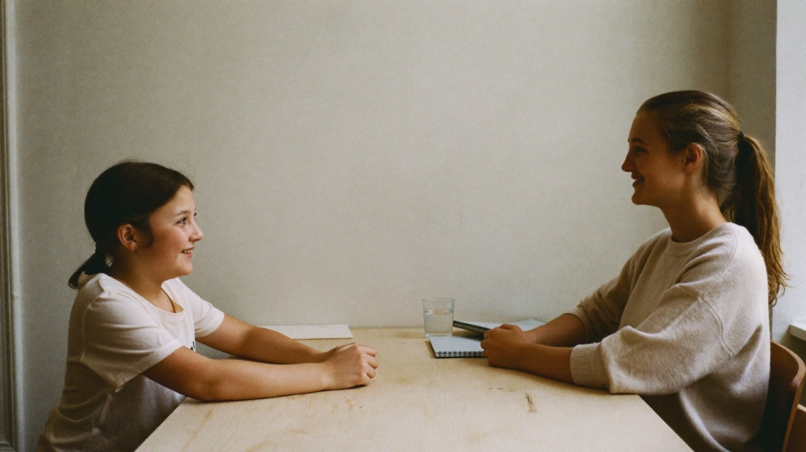

From enquiry to
the first session.
You do not browse a catalogue. We go through the need with you and then choose the tutor who suits the student best.

How it works.
You take the first step. We handle the rest — you never have to search, compare or negotiate.
-
01
Enquiry
Tell us what the student needs help with, which year group and which subjects. It takes about two minutes.
-
02
We get in touch
We go through the need together with you before any matching is done.
-
03
Matching
We select the tutor who suits the student best — based on subject, level, need and personality.
-
04
Study plan and booking
We draw up an individual study plan and you book your sessions.
-
05
Follow-up
After each session you get a report and access to extra digital exercises.
You set the pace.
Sessions are booked in whole hours — one, two or three — within the times the tutor has entered. You choose the length at each booking and it can differ between sessions.
Both you and the tutor can move or cancel a session until it has taken place, and the other party sees the change immediately. A session that never took place is never invoiced.
A session counts as completed only once the tutor has written the report. That is the same thing that decides what ends up on the monthly invoice — no report, no invoice line.
Safety at every step.
This is not admin for its own sake. Each part exists because someone would otherwise have had to trust a promise.
Everyone goes through Nextrum’s selection and vetting process before they are visible to a family.
Payment goes through Nextrum. Booking, session and invoice all connect, so what took place is always visible.
Communication happens through the platform, so there is a record of what was said and booked.
We follow up on sessions and collect feedback.
Ready to take the next step?
For those who want to learn more. For those who want to help others.
- No minimum term
- Costs nothing to ask